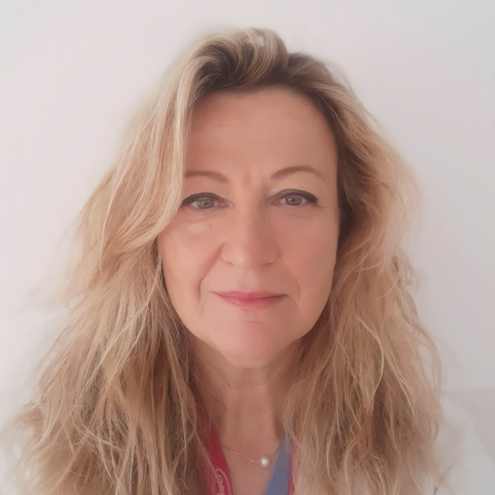

Da oltre vent'anni mi occupo della valutazione e della riabilitazione dei disturbi della voce, del linguaggio e della deglutizione nell'adulto, con particolare attenzione alla riabilitazione vocale e alle problematiche legate a patologie neurologiche e otorinolaringoiatriche.
ContattamiSono logopedista laureata presso l'Università degli Studi di Padova e iscritta all'Ordine TSRM-PSTRP delle province di Gorizia, Pordenone, Trieste e Udine.
Nel corso della mia attività professionale ho maturato oltre vent'anni di esperienza clinica all'interno di strutture del Servizio Sanitario Pubblico. Dopo un lungo percorso nella riabilitazione neurologica, la mia attività si è progressivamente orientata verso l'ambito otorinolaringoiatrico e vocologico, con particolare attenzione alla valutazione e alla riabilitazione della voce.
Attualmente lavoro presso il Centro Otorinolaringoiatrico di Diagnosi e Riabilitazione Audio-Logopedica (CODRAL) dell'Ospedale Santa Maria della Misericordia di Udine.
Sono socia del Gruppo Italiano Vocologi Clinici (GIVoC) e partecipo regolarmente ad attività di aggiornamento e formazione continua. Svolgo anche attività di docenza e formazione, collaborando con corsi di laurea e scuole di musicoterapia.
Un percorso formativo lungo e costante, tra clinica, vocologia e musicoterapia.
Contattami direttamente per telefono o email. Rispondo entro 24 ore nei giorni lavorativi.